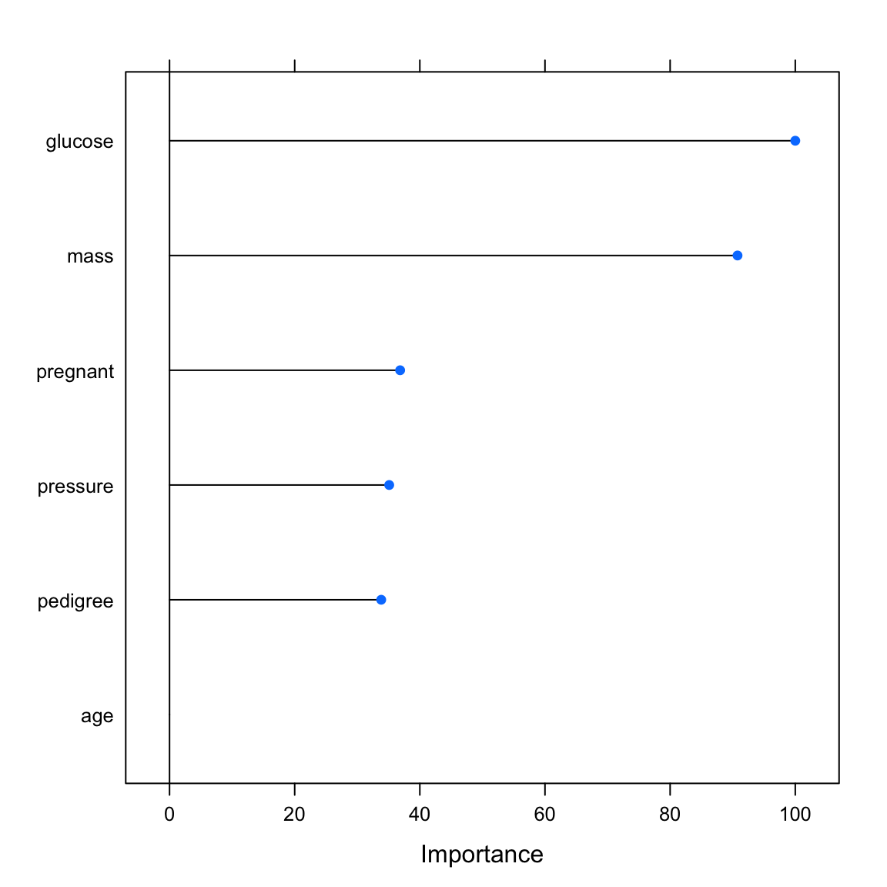
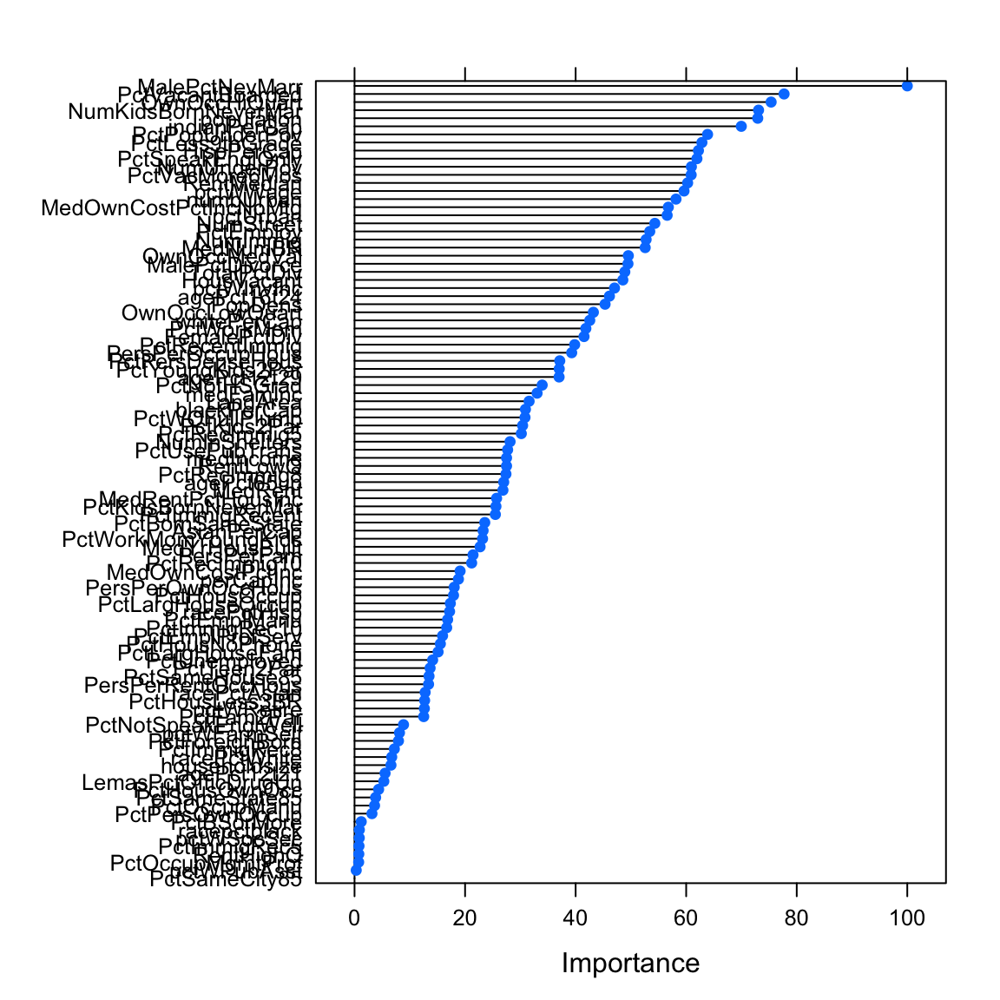
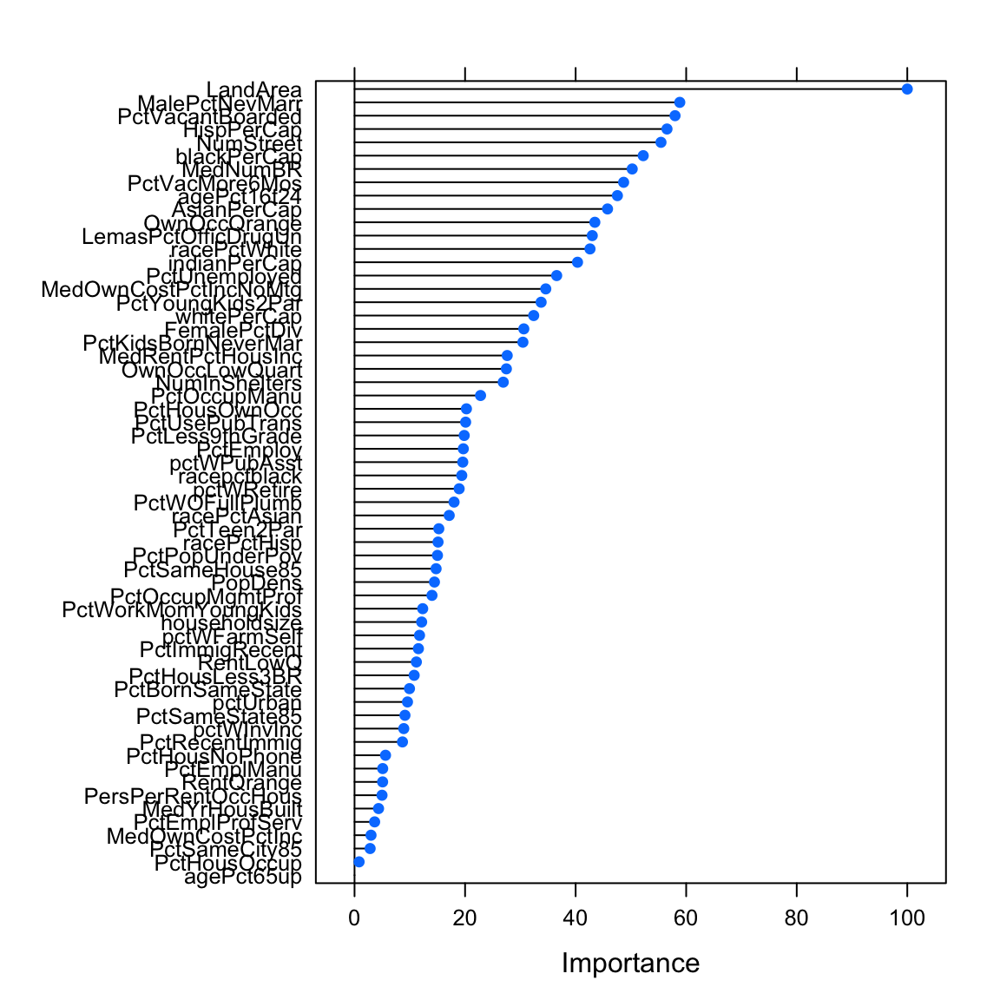
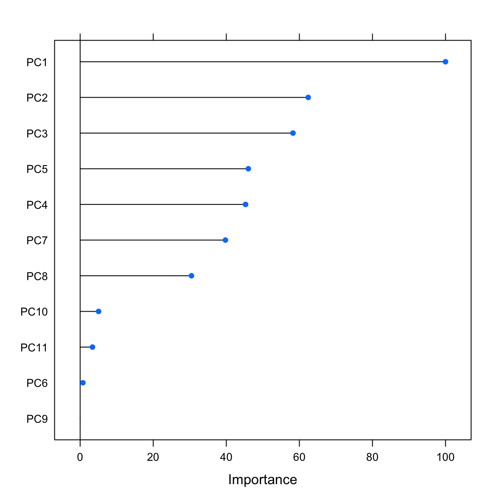

Features
|
Machine Learning with R The R Bootcamp |

|

from from dilbert.com
Overview
By the end of this practical you will:
- Understand the importance of the curse of dimensionality.
- Know how to eliminate unwanted features.
- Explore and use feature importance.
- Use dimensionality reduction.
Tasks
A - Setup
Open your
TheRBootcampR project.Open a new R script. At the top of the script, using comments, write your name and the date. Save it as a new file called
Features_practical.Rin the2_Codefolder.Using
library()loadtidyverseandcaret.
# Load packages
library(tidyverse)
library(caret)- Using the code below load the data sets used in this practical and turn all character into factor.
# Pima Indians diabetes
pima_diabetes <- read_csv(file = "1_Data/pima_diabetes.csv") %>%
mutate_if(is.character, as_factor)
# murders crime statistics
murders_crime <- read_csv(file = "1_Data/murders_crime.csv")%>%
mutate_if(is.character, as_factor)
# (Non-) violent crime statistics
violent_crime <- read_csv(file = "1_Data/violent_crime.csv")%>%
mutate_if(is.character, as_factor)
nonviolent_crime <- read_csv(file = "1_Data/nonviolent_crime.csv")%>%
mutate_if(is.character, as_factor)B - Pima Indians Diabetes
In this section, you will explore feature selection for the Pima Indians Diabetes data set. The Pima are a group of Native Americans living in Arizona. A genetic predisposition allowed this group to live well with a diet poor of carbohydrates for years. In the recent years, however, because of a sudden shift from traditional agricultural crops to processed foods, together with a decline in physical activity, they developed a high prevalence of type 2 diabetes. For this reason they have been subject of many studies.
- Print
pima_diabetesto take a look and familiarize yourself with the data.
pima_diabetes# A tibble: 724 x 7
diabetes pregnant glucose pressure mass pedigree age
<fct> <dbl> <dbl> <dbl> <dbl> <dbl> <dbl>
1 pos 6 148 72 33.6 0.627 50
2 neg 1 85 66 26.6 0.351 31
3 pos 8 183 64 23.3 0.672 32
4 neg 1 89 66 28.1 0.167 21
5 pos 0 137 40 43.1 2.29 33
6 neg 5 116 74 25.6 0.201 30
7 pos 3 78 50 31 0.248 26
8 pos 2 197 70 30.5 0.158 53
9 neg 4 110 92 37.6 0.191 30
10 pos 10 168 74 38 0.537 34
# … with 714 more rowsSplitting
- Before you begin, you need to separate the hold-out (test) data set for later. Create
pima_trainandpima_testusing thecreateDataPartition()function. Setp = .15to select (only) 15% of cases for the training set. The criterion isdiabetes. See code below.
# seed
set.seed(100)
# split index
train_index <- createDataPartition(XX$XX, p = .15, list = FALSE)
# train and test sets
pima_train <- XX %>% slice(train_index)
pima_test <- XX %>% slice(-train_index)# seed
set.seed(100)
# split index
train_index <- createDataPartition(pima_diabetes$diabetes, p = .15, list = FALSE)
# train and test sets
pima_train <- pima_diabetes %>% slice(train_index)
pima_test <- pima_diabetes %>% slice(-train_index)Remove unwanted features
OK, let’s get to work and remove some features from the training data.
- First split the training data into a data frame holding the predictors and a vector holding the criterion (
diabetes) using the template below.
# Select predictors
pima_train_pred <- pima_train %>% select(-XX)
# Select criterion
pima_train_crit <- pima_train %>% select(XX)# Select predictors
pima_train_pred <- pima_train %>% select(-diabetes)
# Select criterion
pima_train_crit <- pima_train %>% select(diabetes)- Although, use the template below to test whether there are any excessively correlated features using
cor()andfindCorrelation(). Are there any?
# determine correlation matrix
corr_matrix <- cor(XX_pred)
# find excessively correlated variables
findCorrelation(corr_matrix)# determine correlation matrix
corr_matrix <- cor(pima_train_pred)
# find excessively correlated variables
findCorrelation(corr_matrix)integer(0)- Now, test if there are any near-zero variance features using the
nearZeroVarfunction. Any of those?
# find near zero variance predictors
nearZeroVar(XX_pred)# find near zero variance predictors
nearZeroVar(pima_train_pred)integer(0)Feature importance
As there were no problems with the features in the data set, you have retained all of them. In this section, you will carry out feature selection on the grounds of feature importance. To do this, you first have to fit a model on the basis of which feature importance can be determined. How about a simple logistic regression using method = "glm"?
- Fit a
glmmodel to the training data predictingdiabetes. Call the modelpima_glm.
# fit regression
pima_glm <- train(diabetes ~ .,
data = XX,
method = XX,
trControl = trainControl(method = 'none'))# fit regression
pima_glm <- train(diabetes ~ .,
data = pima_train,
method = "glm",
trControl = trainControl(method = 'none'))- Evaluate feature importance using
varImp(). The function will show importance on a scale from 0 (least important feature) to 100 (most important feature). You can setscale = TRUEto see absolute importance measures scaled as t-values.
# determine variable importance
varimp_glm <- varImp(XX)
# print variable importance
varimp_glm
# print variable importance
plot(varimp_glm)# determine variable importance
varimp_glm <- varImp(pima_glm)
# print variable importance
varimp_glmglm variable importance
Overall
glucose 100.0
mass 90.8
pregnant 36.9
pressure 35.1
pedigree 33.8
age 0.0# print variable importance
plot(varimp_glm)
Model comparison
Now, create a second model using the best features and compare performances.
- Fit the glm a second time, this time using only the four best features and store the result in a different fit object.
# fit glm with best four features
pima_glm4 <- train(diabetes ~ XX + YY + ZZ + AA,
data = XX,
method = XX)# fit glm with best four features
pima_glm4 <- train(diabetes ~ glucose + mass + pregnant + pressure,
data = pima_train,
method = "glm")- For both models, the glm using all and the glm using just four features, predict the criterion in the test data and evaluate the prediction performance using
confusionMatrix(). Which model model is better?
# determine predictions for test data
pima_glm_pred <- predict(XX, newdata = XX)
pima_glm4_pred <- predict(XX, newdata = XX)
# evaluate the results
confusionMatrix(XX, reference = XX)
confusionMatrix(XX, reference = XX)# determine predictions for test data
pima_glm_pred <- predict(pima_glm, newdata = pima_test)
pima_glm4_pred <- predict(pima_glm4, newdata = pima_test)
# evaluate the results
confusionMatrix(pima_glm_pred, pima_test$diabetes)Confusion Matrix and Statistics
Reference
Prediction pos neg
pos 109 51
neg 102 352
Accuracy : 0.751
95% CI : (0.715, 0.785)
No Information Rate : 0.656
P-Value [Acc > NIR] : 2.70e-07
Kappa : 0.414
Mcnemar's Test P-Value : 5.29e-05
Sensitivity : 0.517
Specificity : 0.873
Pos Pred Value : 0.681
Neg Pred Value : 0.775
Prevalence : 0.344
Detection Rate : 0.178
Detection Prevalence : 0.261
Balanced Accuracy : 0.695
'Positive' Class : pos
confusionMatrix(pima_glm4_pred, pima_test$diabetes)Confusion Matrix and Statistics
Reference
Prediction pos neg
pos 113 44
neg 98 359
Accuracy : 0.769
95% CI : (0.733, 0.802)
No Information Rate : 0.656
P-Value [Acc > NIR] : 9.36e-10
Kappa : 0.454
Mcnemar's Test P-Value : 8.68e-06
Sensitivity : 0.536
Specificity : 0.891
Pos Pred Value : 0.720
Neg Pred Value : 0.786
Prevalence : 0.344
Detection Rate : 0.184
Detection Prevalence : 0.256
Balanced Accuracy : 0.713
'Positive' Class : pos
You should have observed that the model with two fewer features is actually slightly better than the full model. Why do you think this is the case?
Play around: Increase the proportion of data dedicated to training or use a different model, e.g.,
random forest, and see whether things change.
C - Murders
Now explore feature selection using a different data set. The data used in this section combines socio-economic data from the US ’90 Census, data from Law Enforcement Management and Admin Stats survey, and crime data from the FB. The gaol is to predict murders (the criterion in this section).
- Print
murders_crimeand familiarize yourself with the data.
murders_crime# A tibble: 1,823 x 102
murders population householdsize racepctblack racePctWhite racePctAsian
<fct> <dbl> <dbl> <dbl> <dbl> <dbl>
1 yes 27591 2.63 0.17 94.8 1.6
2 yes 36830 2.6 42.4 53.7 0.54
3 yes 23928 2.6 11.0 81.3 1.78
4 no 15675 2.59 4.08 84.1 0.54
5 yes 96086 3.19 8.54 59.8 17.2
6 no 48622 2.44 3.14 95.5 0.77
7 no 10444 3.02 0.41 98.9 0.39
8 yes 222103 2.49 11.4 82.4 3.77
9 no 15535 2.35 14.9 84.6 0.32
10 yes 24664 2.73 13.7 85.0 0.53
# … with 1,813 more rows, and 96 more variables: racePctHisp <dbl>,
# agePct12t21 <dbl>, agePct12t29 <dbl>, agePct16t24 <dbl>, agePct65up <dbl>,
# numbUrban <dbl>, pctUrban <dbl>, medIncome <dbl>, pctWWage <dbl>,
# pctWFarmSelf <dbl>, pctWInvInc <dbl>, pctWSocSec <dbl>, pctWPubAsst <dbl>,
# pctWRetire <dbl>, medFamInc <dbl>, perCapInc <dbl>, whitePerCap <dbl>,
# blackPerCap <dbl>, indianPerCap <dbl>, AsianPerCap <dbl>, HispPerCap <dbl>,
# NumUnderPov <dbl>, PctPopUnderPov <dbl>, PctLess9thGrade <dbl>,
# PctNotHSGrad <dbl>, PctBSorMore <dbl>, PctUnemployed <dbl>,
# PctEmploy <dbl>, PctEmplManu <dbl>, PctEmplProfServ <dbl>,
# PctOccupManu <dbl>, PctOccupMgmtProf <dbl>, MalePctDivorce <dbl>,
# MalePctNevMarr <dbl>, FemalePctDiv <dbl>, TotalPctDiv <dbl>,
# PersPerFam <dbl>, PctFam2Par <dbl>, PctKids2Par <dbl>,
# PctYoungKids2Par <dbl>, PctTeen2Par <dbl>, PctWorkMomYoungKids <dbl>,
# PctWorkMom <dbl>, NumKidsBornNeverMar <dbl>, PctKidsBornNeverMar <dbl>,
# NumImmig <dbl>, PctImmigRecent <dbl>, PctImmigRec5 <dbl>,
# PctImmigRec8 <dbl>, PctImmigRec10 <dbl>, PctRecentImmig <dbl>,
# PctRecImmig5 <dbl>, PctRecImmig8 <dbl>, PctRecImmig10 <dbl>,
# PctSpeakEnglOnly <dbl>, PctNotSpeakEnglWell <dbl>, PctLargHouseFam <dbl>,
# PctLargHouseOccup <dbl>, PersPerOccupHous <dbl>, PersPerOwnOccHous <dbl>,
# PersPerRentOccHous <dbl>, PctPersOwnOccup <dbl>, PctPersDenseHous <dbl>,
# PctHousLess3BR <dbl>, MedNumBR <dbl>, HousVacant <dbl>, PctHousOccup <dbl>,
# PctHousOwnOcc <dbl>, PctVacantBoarded <dbl>, PctVacMore6Mos <dbl>,
# MedYrHousBuilt <dbl>, PctHousNoPhone <dbl>, PctWOFullPlumb <dbl>,
# OwnOccLowQuart <dbl>, OwnOccMedVal <dbl>, OwnOccHiQuart <dbl>,
# OwnOccQrange <dbl>, RentLowQ <dbl>, RentMedian <dbl>, RentHighQ <dbl>,
# RentQrange <dbl>, MedRent <dbl>, MedRentPctHousInc <dbl>,
# MedOwnCostPctInc <dbl>, MedOwnCostPctIncNoMtg <dbl>, NumInShelters <dbl>,
# NumStreet <dbl>, PctForeignBorn <dbl>, PctBornSameState <dbl>,
# PctSameHouse85 <dbl>, PctSameCity85 <dbl>, PctSameState85 <dbl>,
# LandArea <dbl>, PopDens <dbl>, PctUsePubTrans <dbl>,
# LemasPctOfficDrugUn <dbl>Splitting
- Create
murders_trainandmurders_testusingcreateDataPartition()with (only) 25% of cases going into the training set.
# split index
train_index <- createDataPartition(murders_crime$murders, p = .25, list = FALSE)
# train and test sets
murders_train <- murders_crime %>% slice(train_index)
murders_test <- murders_crime %>% slice(-train_index)Remove unwanted features
- Before removing unwanted features from the training set, split the training data into predictors and the criterion in the same way you have done this above.
# Select predictors
murders_train_pred <- murders_train %>% select(-murders)
# Select criterion
murders_train_crit <- murders_train %>% select(murders)- Test if there are any excessively correlated features using
cor()andfindCorrelation(). Are there any this time?
# determine correlation matrix
corr_matrix <- cor(murders_train_pred)
# find excessively correlated variables
findCorrelation(corr_matrix) [1] 11 17 27 30 41 44 48 49 53 54 55 57 58 59 60 61 63 64 65 68 71 80 81 84 85
[26] 87 93 7 8 14 13 20 21 31 38 43 1 62 42 67 51- Using the code below, remove the excessively correlated features from the training predictor set.
# remove features
murders_train_pred <- murders_train_pred %>% select(- XX)# remove features
murders_train_pred <- murders_train_pred %>%
select(-findCorrelation(corr_matrix))- Test if there are any near-zero variance features. Any of those this time?
# find near zero variance predictors
nearZeroVar(murders_train_pred)integer(0)- You should have found that there were plenty of excessively correlated features but no near-zero variance features. Provided that you excluded the former, bind the reduced predictor set back together with the criterion into a new, clean version of the training set. See template below.
# clean training set
murders_train_clean <- XX %>%
bind_cols(XX)# combine clean predictor set with criterion
murders_train_clean <- murders_train_pred %>%
bind_cols(murders_train_crit)Model comparison
- Let us find out whether excluding some of the highly correlated features matters. Fit a
glmtwice, once using the original training set and once using the clean training set, and store the fits in separate objects. See template below.
# fit glm
murders_glm <- train(murders ~ .,
data = XX,
method = "glm",
trControl = trainControl(method = 'none'))
# fit glm with clean data
murders_glm_clean <- train(murders ~ .,
data = XX,
method = "glm",
trControl = trainControl(method = 'none'))# fit glm
murders_glm <- train(murders ~ .,
data = murders_train,
method = "glm",
trControl = trainControl(method = 'none'))
# fit glm with clean data
murders_glm_clean <- train(murders ~ .,
data = murders_train_clean,
method = "glm",
trControl = trainControl(method = 'none'))- You probably have noticed warning messages. They could indicate that the features in both data sets, but especially the non-clean set, are still too highly correlated. Go ahead nonetheless and evaluate the performance on the hold-out set. Which set of features predicts better?
# determine predictions for test data
murders_pred <- predict(murders_glm, newdata = murders_test)
murders_clean_pred <- predict(murders_glm_clean, newdata = murders_test)
# evaluate the results
confusionMatrix(murders_pred, murders_test$murders)Confusion Matrix and Statistics
Reference
Prediction yes no
yes 549 201
no 188 429
Accuracy : 0.715
95% CI : (0.691, 0.739)
No Information Rate : 0.539
P-Value [Acc > NIR] : <2e-16
Kappa : 0.427
Mcnemar's Test P-Value : 0.543
Sensitivity : 0.745
Specificity : 0.681
Pos Pred Value : 0.732
Neg Pred Value : 0.695
Prevalence : 0.539
Detection Rate : 0.402
Detection Prevalence : 0.549
Balanced Accuracy : 0.713
'Positive' Class : yes
confusionMatrix(murders_clean_pred, murders_test$murders)Confusion Matrix and Statistics
Reference
Prediction yes no
yes 548 193
no 189 437
Accuracy : 0.721
95% CI : (0.696, 0.744)
No Information Rate : 0.539
P-Value [Acc > NIR] : <2e-16
Kappa : 0.437
Mcnemar's Test P-Value : 0.878
Sensitivity : 0.744
Specificity : 0.694
Pos Pred Value : 0.740
Neg Pred Value : 0.698
Prevalence : 0.539
Detection Rate : 0.401
Detection Prevalence : 0.542
Balanced Accuracy : 0.719
'Positive' Class : yes
Data compression with PCA
- Given the high features correlations, it could be sensible to compress the data using
principal component analysis(PCA). Create a third glm model using the original, full training set and this time addpreProcess = c('pca')andpreProcOptions = list(thresh = 0.8)intrControl. These additional settings instruct caret to extract new features from the data using PCA and to retain only as many features as are needed to capture 80% of the original variance.
# fit glm with preprocessed features
murders_glm_pca = train(murders ~ .,
data = murders_train,
method = "glm",
preProcess = c("pca"),
trControl = trainControl(method = 'none',
preProcOptions = list(thresh = 0.8)))- Compare the prediction performance to the previous two models.
# determine predictions for test data
murders_pca <- predict(murders_glm_pca, newdata = murders_test)
# evaluate the results
confusionMatrix(murders_pca, murders_test$murders)Confusion Matrix and Statistics
Reference
Prediction yes no
yes 553 144
no 184 486
Accuracy : 0.76
95% CI : (0.737, 0.782)
No Information Rate : 0.539
P-Value [Acc > NIR] : <2e-16
Kappa : 0.519
Mcnemar's Test P-Value : 0.0313
Sensitivity : 0.750
Specificity : 0.771
Pos Pred Value : 0.793
Neg Pred Value : 0.725
Prevalence : 0.539
Detection Rate : 0.405
Detection Prevalence : 0.510
Balanced Accuracy : 0.761
'Positive' Class : yes
- Play around: Alter the amount of variance explained by the
PCA(usingthresh), increase the proportion dedicated to training, use a different model, e.g.,random forest, and see whether things change.
Feature importance
- Now find out which features are actually most important for predicting murders. Using
varImp(), evaluate the feature importance for each of the three models used in the previous section.
# determine variable importance
varimp_glm <- varImp(murders_glm)
varimp_glm_clean <- varImp(murders_glm_clean)
varimp_glm_pca <- varImp(murders_glm_pca)
# print variable importance
varimp_glmglm variable importance
only 20 most important variables shown (out of 99)
Overall
MalePctNevMarr 100.0
PctVacantBoarded 77.7
OwnOccHiQuart 75.4
NumKidsBornNeverMar 73.1
population 72.9
indianPerCap 70.0
PctPopUnderPov 63.9
PctLess9thGrade 62.8
HispPerCap 62.2
PctSpeakEnglOnly 61.9
NumUnderPov 60.9
PctVacMore6Mos 60.9
RentMedian 60.3
pctWWage 59.6
numbUrban 58.2
MedOwnCostPctIncNoMtg 56.8
pctUrban 56.6
NumStreet 54.3
PctEmploy 53.4
NumImmig 52.7varimp_glm_cleanglm variable importance
only 20 most important variables shown (out of 60)
Overall
LandArea 100.0
MalePctNevMarr 58.8
PctVacantBoarded 58.0
HispPerCap 56.5
NumStreet 55.4
blackPerCap 52.2
MedNumBR 50.2
PctVacMore6Mos 48.7
agePct16t24 47.6
AsianPerCap 45.8
OwnOccQrange 43.5
LemasPctOfficDrugUn 43.0
racePctWhite 42.6
indianPerCap 40.3
PctUnemployed 36.6
MedOwnCostPctIncNoMtg 34.6
PctYoungKids2Par 33.8
whitePerCap 32.4
FemalePctDiv 30.6
PctKidsBornNeverMar 30.5varimp_glm_pcaglm variable importance
Overall
PC1 100.000
PC2 62.415
PC3 58.250
PC5 46.031
PC4 45.273
PC7 39.760
PC8 30.465
PC10 5.043
PC11 3.375
PC6 0.752
PC9 0.000# print variable importance
plot(varimp_glm)
plot(varimp_glm_clean)
plot(varimp_glm_pca)
- Now that you know which features were most important, do you think you can come up with a set of features that reliably outperforms thew predictions based on the pca-generated feature set? Try it out!
Z - Violent & Non-violent Crime Data
Analyze the violent and non-violent crime data sets predicting either the number of violent crimes per 100k inhabitants (
ViolentCrimesPerPop) or the number of non-violent crimes per 100k inhabitants (nonViolPerPop). Both criteria are numeric, implying that this is not classification problem, but one of regression. Other than that, the features in the data set are identical to the previous analyses. How well can you predict violent or non-violent crimes?Another approach to feature selection, beyond selection by hand or PCA, is to have the computer try to automically select subsets of features that lead to the best possible cross-validation performance. One such process is called recursive feature elimination. Try it out using
caret’srfe()function. See code below.
# split index
train_index <- createDataPartition(violent_crime$ViolentCrimesPerPop,
p = .8,
list = FALSE)
# train and test sets
violent_train <- violent_crime %>% slice(train_index)
violent_test <- violent_crime %>% slice(-train_index)
# remove extreme correlations (OPTIONAL)
predictors <- violent_train %>% select(-ViolentCrimesPerPop)
predictors <- predictors %>% select(-findCorrelation(cor(predictors)))
violent_train_clean <- predictors %>%
add_column(ViolentCrimesPerPop = violent_train$ViolentCrimesPerPop)
# Feature elimination settings
ctrl_rfe <- rfeControl(functions = lmFuncs, # linear model
method = "cv",
verbose = FALSE,
rerank = FALSE)
# Run feature elimination
profile <- rfe(x = violent_train %>% select(-ViolentCrimesPerPop),
y = violent_train$ViolentCrimesPerPop,
sizes = 1:(ncol(violent_train_clean)-1), # Features set sizes
rfeControl = ctrl_rfe)
# inspect cross-validation as a function of performance
plot(profile)Examples
# Step 0: Load packages-----------
library(tidyverse) # Load tidyverse for dplyr and tidyr
library(tibble) # For advanced tibble functions
library(caret) # For ML mastery
# Step 1: Load, prepare, and explore data ----------------------
# read data
data <- read_csv("1_Data/mpg_num.csv")
# Convert all characters to factors
data <- data %>%
mutate_if(is.character, factor)
# Explore training data
data # Print the dataset
dim(data) # Print dimensions
names(data) # Print the names
# Step 2: Create training and test sets -------------
# Create train index
train_index <- createDataPartition(criterion,
p = .8,
list = FALSE)
# Create training and test sets
data_train <- data %>% slice(train_index)
data_test <- data %>% slice(-train_index)
# split predictors and criterion
criterion_train <- data_train %>% select(hwy) %>% pull()
predictors_train <- data_train %>% select(-hwy)
criterion_test <- data_test %>% select(hwy) %>% pull()
predictors_test <- data_test %>% select(-hwy)
# Step 3: Clean data -------------
# Test for excessively correlated features
corr_matrix <- cor(predictors_train)
corr_features <- findCorrelation(corr_matrix)
# Remove excessively correlated features
predictors_train <- predictors_train %>% select(-corr_features)
# Test for near zero variance features
zerovar_features <- nearZeroVar(predictors_train)
# Remove near zero variance features
predictors_train <- predictors_train %>% select(-zerovar_features)
# recombine data
data_train <- predictors_train %>% add_column(hwy = criterion_train)
# Step 4: Define training control parameters -------------
# Train using cross-validation
ctrl_cv <- trainControl(method = "cv")
# Step 5: Fit models -------------
# Fit glm vanilla flavor
hwy_glm <- train(form = hwy ~ .,
data = data_train,
method = "glm",
trControl = ctrl_cv)
# Fit with pca transformation
hwy_glm_pca <- train(form = hwy ~ .,
data = data_train,
method = "glm",
trControl = ctrl_cv,
preProcess = c('pca'))
# Fit scaling and centering
hwy_glm_sca <- train(form = hwy ~ .,
data = data_train,
method = "glm",
trControl = ctrl_cv,
preProcess = c('scale', 'center'))
# Get fits
glm_fit <- predict(hwy_glm)
glm_pca_fit <- predict(hwy_glm_pca)
glm_sca_fit <- predict(hwy_glm_sca)
# Step 6: Evaluate variable importance -------------
# Run varImp()
imp_glm <- varImp(hwy_glm)
imp_glm_pca <- varImp(hwy_glm_pca)
imp_glm_sca <- varImp(hwy_glm_sca)
# Plot variable importance
plot(imp_glm)
plot(imp_glm_pca)
plot(imp_glm_sca)
# Step 7: Select variables -------------
# Select by hand in formula
hwy_glm_sel <- train(form = hwy ~ cty,
data = data_train,
method = "glm",
trControl = ctrl_cv)
# Select by reducing pca criterion ---
# Reduce criterion to 50% variance epxlained
ctrl_cv_pca <- trainControl(method = "cv",
preProcOptions = list(thresh = 0.50))
# Refit model with update
hwy_glm_sel <- train(form = hwy ~ .,
data = data_train,
method = "glm",
trControl = ctrl_cv_pca,
preProcess = c('pca'))
# Step 8: Recursive feature elimination -------------
# Feature elimination settings
ctrl_rfe <- rfeControl(functions = lmFuncs, # linear model
method = "cv",
verbose = FALSE)
# Run feature elimination
profile <- rfe(x = predictors_train,
y = criterion_train,
sizes = c(1, 2, 3), # Features set sizes should be considered
rfeControl = ctrl_rfe)
# plot result
trellis.par.set(caretTheme())
plot(profile, type = c("g", "o"))
# Step 9: Evaluate models -------------
# you know how...Datasets
| File | Rows | Columns |
|---|---|---|
| pima_diabetes | 724 | 7 |
| murders_crime | 1000 | 102 |
| violent_crime | 1000 | 102 |
| nonviolent_crime | 1000 | 102 |
The
pima_diabetesis a subset of thePimaIndiansDiabetes2data set in themlbenchpackage. It contains medical and demographic data of Pima Indians.The
murders_crime,violent_crime, andnon_violent_crimedata are subsets of the Communities and Crime Unnormalized Data Set data set from the UCI Machine Learning Repository. To see column descriptions, visit this site: Communities and Crime Unnormalized Data Set. Due to the large number of variables (102), we do not include the full tables below.
Variable description of pima_diabetes
| Name | Description |
|---|---|
pregnant |
Number of times pregnant. |
glucose |
Plasma glucose concentration (glucose tolerance test). |
pressure |
Diastolic blood pressure (mm Hg). |
triceps |
Triceps skin fold thickness (mm). |
insulin |
2-Hour serum insulin (mu U/ml). |
mass |
Body mass index (weight in kg/(height in m)^2). |
pedigree |
Diabetes pedigree function. |
age |
Age (years). |
diabetes |
Class variable (test for diabetes). |
Functions
Packages
| Package | Installation |
|---|---|
tidyverse |
install.packages("tidyverse") |
tibble |
install.packages("tibble") |
caret |
install.packages("caret") |
Functions
| Function | Package | Description |
|---|---|---|
trainControl() |
caret |
Define modelling control parameters |
train() |
caret |
Train a model |
predict(object, newdata) |
stats |
Predict the criterion values of newdata based on object |
postResample() |
caret |
Calculate aggregate model performance in regression tasks |
confusionMatrix() |
caret |
Calculate aggregate model performance in classification tasks |
varImp() |
caret |
Determine the model-specific importance of features |
findCorrelation(), nearZeroVar() |
caret |
Identify highly correlated and low variance features. |
rfe(), rfeControl() |
caret |
Run and control recursive feature selection. |
Resources
Cheatsheet
from github.com/rstudio